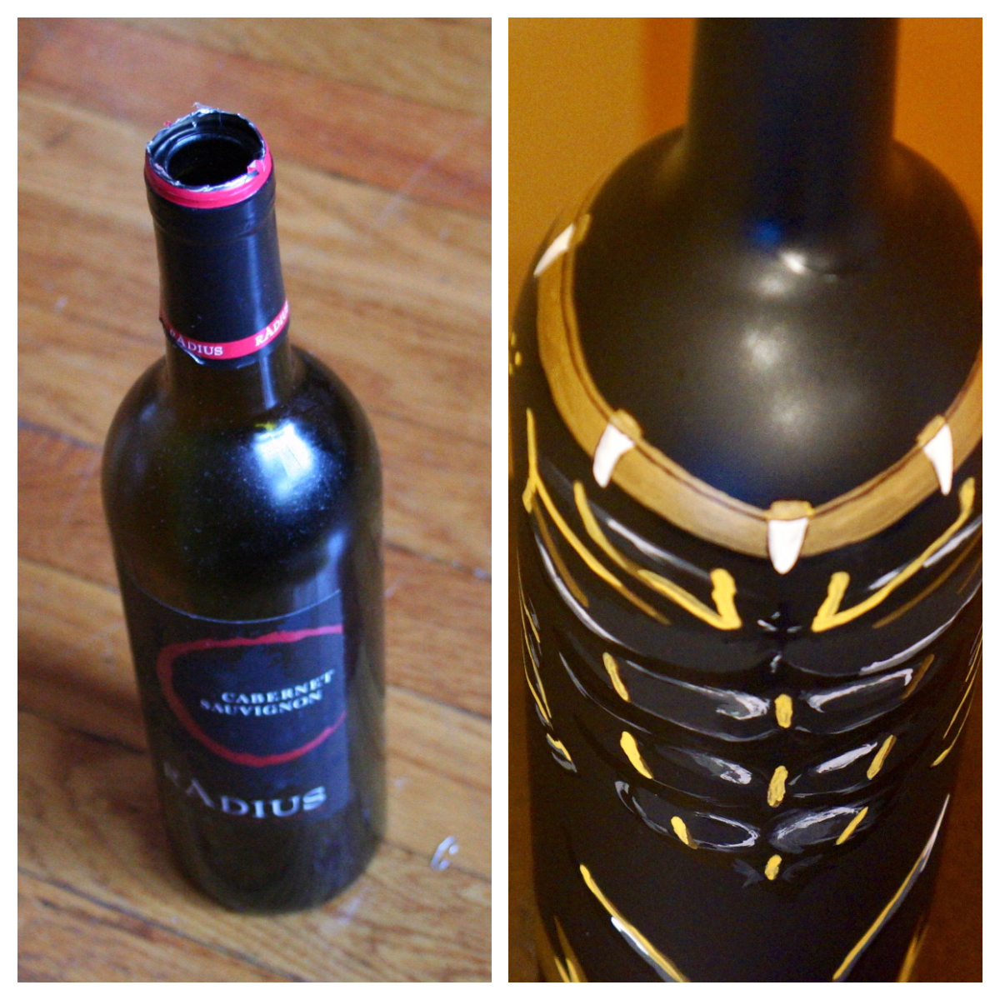
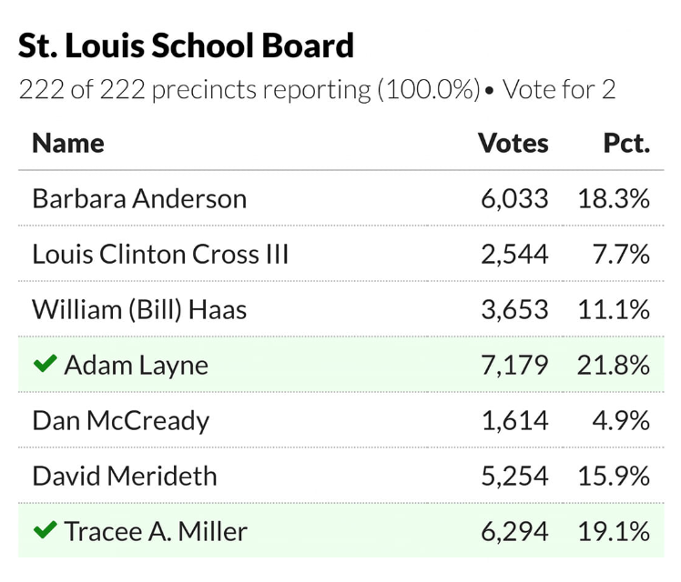
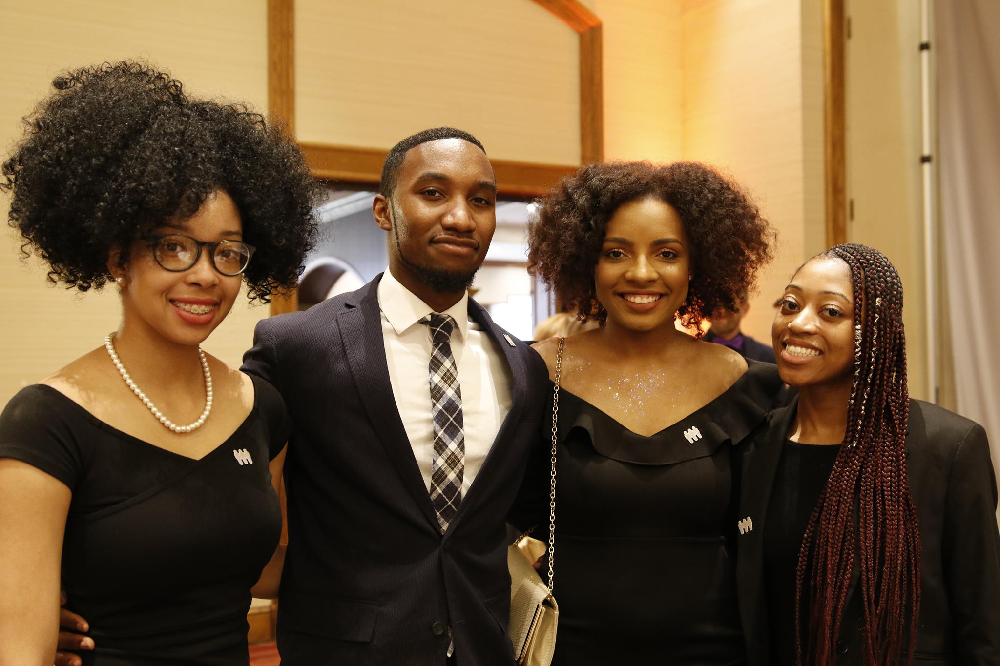

Painting
Adam loves to paint. He isn't very good, but it is a very relaxing activity that he uses to de-stress. Look at some of the pieces of art Adam has created below!

Running for Office
Adam had a wonderful time running for School Board. Even though it was hard, he recieved a lot of great support from friends, family, and strangers who helped him to persevere. He ended up finishing first of all 7 candiates. View the results below!

Visit my website here!
Family
Adam doesn't have a large family. He has two younger sisters and grew up with his mother in the city of Boston. here they are!

Bracketology
Adam considers himself a Bracketologist. However, his brackets don't usually turn out well. This year he had Duke going to the final game. Look below to see how that turned out.